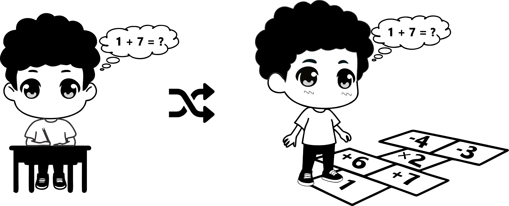
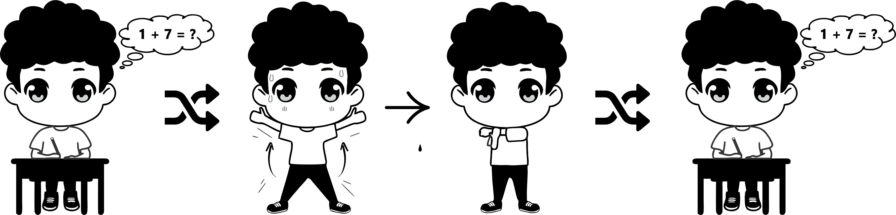

Nossa Metodologia

Lições Fisicamente Ativas
As lições fisicamente ativas consistem em integrar o movimento corporal ao conteúdo curricular, utilizando estratégias pedagógicas que associam atividade física leve a moderada ao ensino de disciplinas como matemática, português e ciências.
Características principais:
- Conecta movimento ao conteúdo pedagógico
- Envolve movimentos leves a moderados, realizados dentro da sala
- Foco simultâneo na aprendizagem e na promoção da atividade física
Pausas Ativas
As pausas ativas são pequenas interrupções planejadas durante as aulas, com duração de 5 a 10 minutos, em que os alunos realizam atividades físicas breves, como alongamentos, jogos rápidos ou movimentos rítmicos.
Características principais:
- Curtas e frequentes (5–10 minutos), sem necessidade de mudar de ambiente
- Foco na movimentação corporal, atenção plena e retomada da concentração
- Não exige adaptação do conteúdo pedagógico
